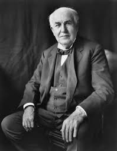
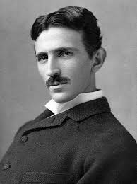
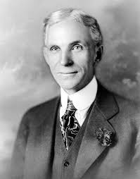
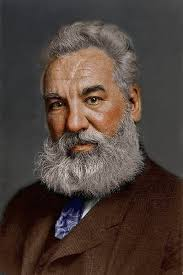

Revolusi 2.0
Dikenal sebagai Revolusi Teknologi, fase ini ditandai dengan penggunaan listrik, produksi massal, dan sistem jalur perakitan. Inovasi seperti telegraf dan rel kereta api mempercepat komunikasi dan transportasi. Penerapan listrik memungkinkan pabrik meningkatkan efisiensi dan menghasilkan produk dalam jumlah besar dengan biaya lebih rendah.
Revolusi ini juga mendorong perkembangan industri otomotif, baja, dan kimia. Selain itu, meningkatnya sistem transportasi global memungkinkan perdagangan internasional yang lebih efisien.
Orang Penting



